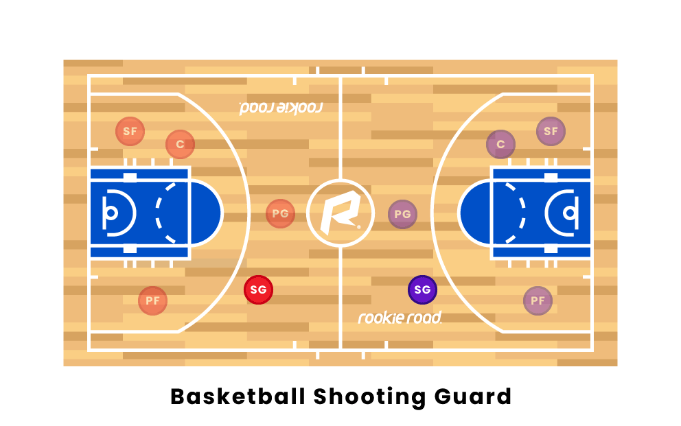
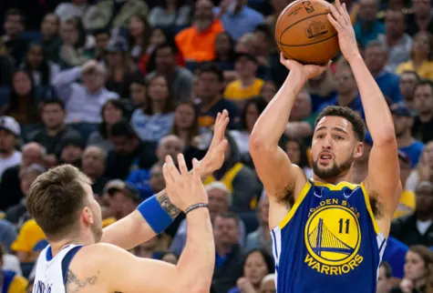
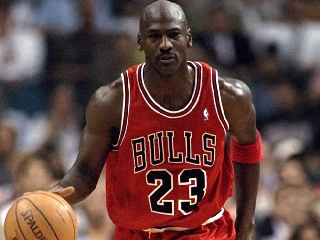

The shooting guard (SG)—also known as the two or the off guard—is, along with the small forward, often referred to as a wing because of its use in common positioning tactics. As the name suggests, most shooting guards are prolific from three-point range and long mid-range. A key aspect of being a shooting guard is having the ability to patiently and methodically circulate the three-point line with the ball. This allows the ability to correctly get into open space for other positions handling the ball. Just like all positions in basketball, the ability to communicate efficiently with teammates is key. If teammates do not know when or where a player will be open, they won't be able to deliver the ball when an opportunity presents itself. Most of these skills depends on whether the shooting guard is a good shooter, a finisher around the rim, a defender, or different combinations of these.[9]

Throughout the evolution of the game, there have been different types of shooting guards, mainly categorized as offensive threats and defensive guards. Shooting guards usually know their play style and get better at the qualities they are good at and then teams determine their role on the court.[9] If the shooting guard focuses more on taking perimeter jump shots, especially three-pointers, by the use of basketball screens such as down screens, and without much dribbling involved, then the shooting guard is typically known as a catch-and-shoot type of player; JJ Redick would fit this type of play style. If the shooting guard emphasizes driving into the lane and scoring at (or around) the basket, then the shooting guard is generally referred to as a slasher type of player. Dwyane Wade was well known for his ability to slash into the lane and score around the rim. However, he also took his fair share of mid-range jump shots and three-pointers.[8] These are known as offensive threats.

If the shooting guard’s main priority is to limit or prevent the opposing team’s star player (which is usually another shooting guard or other perimeter player), then the shooting guard could be known as a defensive specialist. Tony Allen would be considered a defensive specialist. Shooting guards with the ability to shoot from the perimeter while limiting the scoring opportunities of the other team’s best perimeter player can be referred to as the 3-and-D type of players. Danny Green is an example of a 3-and-D type of shooting guard.[8] These are known as defensive guards.
